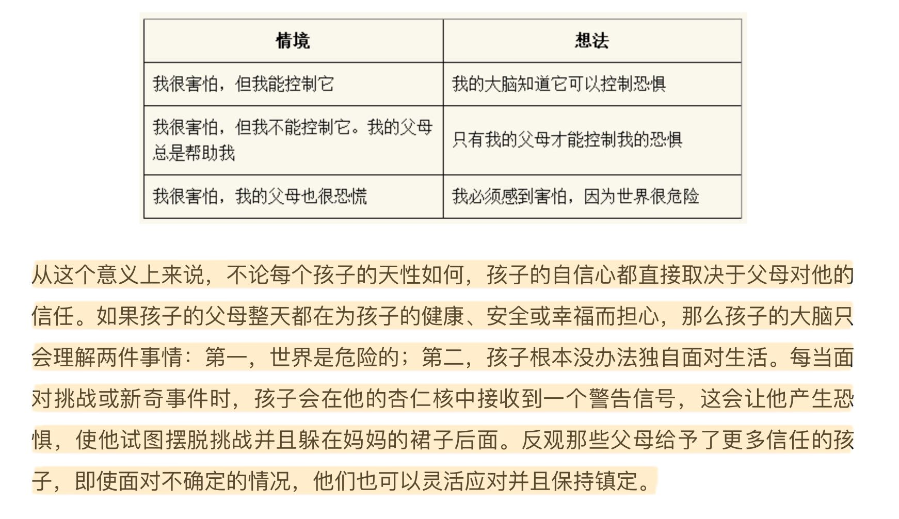

孩子的大脑 阿尔瓦罗·毕尔巴鄂
实战训练迪亚哥非常生气地对他的母亲说：“我恨我的弟弟。”这时候不要说：“你不能恨你的弟弟，你应该爱他。”试着对他说：“我知道，因为妈妈花了很多时间陪小佩德罗，所以你很生气，对不对？你想要妈妈花更多的时间和你在一起。”玛丽亚很沮丧。因为她想去公园，但不巧外面开始下雨了。为此她每过5分钟就哭一次，并且一次比一次哭得厉害。这时候不要说：“玛丽亚，别哭了，冷静下来。喂，安静一点。改天我们再去公园玩。”试着对她说：“你很生气，对吗？你哭是因为你真的很想去公园，对吗？”亚历杭德罗非常愤怒。因为你们刚从超市出来，而他希望你给他买一支棒棒糖。这时候不要说：“亚历杭德罗，别哭了，我是不会给你买棒棒糖的。”试着对他说：“我知道你肯定很生气，因为你想要妈妈给你买棒棒糖，对不对？”埃斯特蕾拉从学校回到家，她不太高兴，却不肯说原因。这时候不要说：“快来，埃斯特蕾拉，振作起来。你想玩扮演公主的游戏吗？”试着对她说：“你有点儿难过，对不对？”“是的，有一点儿。”“嗯，我看你今天似乎心情不太好。”
使用同理心对待孩子不不开心的情况，就是帮助孩子说出来他不开心的原因。
如果这个方式成立的话，那么用同理心对待孩子开心的情况，也是说出他为什么这么开心的原因。
同理心是建立理性脑和情感脑的桥梁，孩子们可能并不清楚为什么自己这么开心或者是悲伤。所以如果我们可以用理性的方式表现出来，就是同理心的表现。
下图是各种不同强度下的情绪，孩子的情绪可能比成人的要多得多
孩子对于家长介入和不介入的不同反应和理解方式

================================
《孩子的大脑》
阿尔瓦罗·毕尔巴鄂 57个笔记
第六章 引言
◆ 有无数小天才培训项目号称能够提升孩子的智力，但对这些项目进行科学验证时，就会发现它们其实毫无效力可言。这些培训项目之所以无效，绝大部分原因在于它们旨在加速大脑发育的过程，认为孩子的大脑越早开发就可以发育得越好。然而，大脑发育并不是可以随意加速的事情，因为人们很难保证在加速的过程中不会丢失其本身的某些属性。我们可以将其与转基因番茄进行类比：虽然在几天之内，转基因番茄就能够成熟并达到“完美”的形状，呈现出诱人的色泽，却失去了作为食物的本质—风味。同理，在压力下发育的大脑，也会为了实现加速而跳过某些阶段，失去它的一部分精华：共情能力、耐心、平静感和爱，这些能力或感受都无法在温室里催熟，而是需要从容不迫的生长，需要父母的耐心等待，在它最恰当的时刻结出那颗最完美的果实。这就是为什么那些重要的有关儿童大脑发育的神经科学研究结论都显得十分简单，比如怀孕期间应该多吃蔬菜和鱼、把婴儿抱在怀里轻轻摇动对其心理发展有益、环境的影响对孩子的智力起重要作用，以及母亲与孩子的对话对孩子的记忆力和语言能力发展非常重要，等等。由此，我们可以很清楚地认识到：在大脑发育的过程中，最基础的也就是最重要的。
第八章 02 你的孩子就像一棵树
◆ 所有生物达到潜力极限的原则都是相同的，对于人类来说，达到潜力的极限意味着比植物或动物获得了更大程度的进化。既然你的孩子拥有一个复杂的大脑，他会感受、会思考、会发展社会关系并实现目标，那么他的本性令他产生的需求层次理所当然要比一只小鸟的需求层次更高一些。人的大脑具有使自己和其他人感觉良好的自然倾向，同时会使人出于本能去寻求幸福并从存在中找到意义。心理学家将这种所有人都怀有的最终目标称为“自我实现”，如果具备必要的条件，每个人都会倾向于这样做。史蒂芬·平克—对人类大脑进化有着充分研究的神经科学家—曾说，为了生活而奋斗、对自由的渴望以及对自身幸福的追求，这些都是我们DNA里的一部分。马斯洛认为，一个人达到潜力极限意味着与其他人相处友善、对自己感觉良好、达到和谐和充分满足的状态。因此，马斯洛使用了一个广为人知的需求金字塔来说明这种发展倾向，但在这里，我想分享给你的是幼儿版的需求金字塔。
◆ 一棵树的生长需要一些最基础的生存条件，比如坚实的土地，比如足够的水、阳光和空间。孩子的大脑发育同样需要满足一些基本的要求，正如上图中显示的那样。对于人类来说，第一层需求，即物质上的保障，包括食物供给、休息和卫生等。此外，还需要安全的家庭环境让孩子远离威胁和虐待，这对应的是第二层需求。第三层需求，就像植物需要充足的水分灌溉一样，孩子的大脑发育需要父母的关爱：父母在情感上保护和滋养孩子，能促进孩子建立良好的自尊。第四层需求，就像树木需要生长空间那样，孩子也需要父母给予他信任和自由，否则他的探索欲和才能就会因为父母传递的不安全感和生长空间的束缚而逐渐被埋没。最后，正如树木努力伸展枝丫追逐阳光，孩子的大脑也在自然地寻找类似阳光的刺激因素，因此，父母应当让孩子自由探索、快乐玩耍、体验和发现周围的世界，并挖掘其所有潜力。
第九章 03 享受此刻
◆ 为人父母毫无疑问需要放弃或推迟许多事情，比如缺少空闲的时间、无法旅行、职业生涯受影响或得不到休息，所有以前你说干就干的事情现在都被排到了第二位。每个家长都知道，当你有了孩子，就意味着你不得不放弃曾经无忧无虑的时光，切换到忙得不可开交的生活状态。依我看，只有当你享受和孩子在一起的时光时，这一切的放弃才有意义，同时，你的内心才能得到补偿。
◆ 如果你经常因为照顾孩子而感到忙碌不已，我建议你试试把注意力转移到其他更积极的事情上去。因为当大脑改变注意力的焦点时，我们就能看到事物完全不同的一面。仔细看下面这幅画。
◆ 从这种意义上来说，游戏是支持孩子智力和情感发育的关键。虽然在一些游戏中孩子学到的很少，甚至一无所获，但游戏的优势依然很明显。孩子的大脑注定是通过游戏来学习的。当我们和孩子一起玩耍时，他就进入了学习模式：孩子所有的感官都集中在游戏上，这时候他能够保持专注，注意你的手势和话语并且牢牢记住，这比直接指导或者命令他的效果要好多了。
第一十章 04 父母必学的大脑基础知识ABC
◆ 有一个比喻可以帮助我们理解人脑的不同进化阶段和组成结构，那就是大脑的三位一体，也可以理解为人的大脑有3个部分。 爬行动物脑是最原始的，处于最底层。人类的这一部分大脑与爬行动物的大脑无异，操控着我们生存的本能。在这部分大脑中有一些结构可以使我们的心脏跳动、保持呼吸，其他结构则控制着警戒状态（醒着或睡着）、检测温度变化并感受饥饿。 第二层是我们称之为情感脑的结构。这部分大脑由早期的哺乳动物大脑进化而来，它的功能在于分辨愉快和不愉快的情绪。因此，情感脑被激活可以避免不愉快的情绪（危险、威胁和让我们感到恐惧的环境），同时寻求和追寻愉快的情绪（食物、与让我们感到安全快乐的人在一起）。 最后一层，也是进化程度最高的一层，是我们的理性脑，也可称之为高级脑。正是这一部分大脑结构将人与其他动物区分开来，使我们拥有自我意识，能够互相沟通、进行推理、换位思考或基于更合理和直观的考虑做出决定。
第一十一章 05 平衡
◆ 然而，“更高程度的智力发展可以让人更加幸福”这种假设本来就是错误的，现实情况是，智商与情商之间的相关性为零。如果有人对于这种统计学专业术语的表达感到不习惯，那么我不妨翻译成最直白的话语：一个人的智力和他的情感能力之间没有任何联系。你一定能够验证这个事实。这个世界上有很多智力超群的人，但他们可能缺乏共情能力、承受着长期的压力或拥有一切你能想象到的成功却仍然感到不幸福。相反，你也一定认识一些文化水平没那么高的人，他们智力平平，但他们热情、受欢迎，并且懂得很多生活的智慧。至于那些自认为聪明绝顶的人，当他们发现“笨蛋”的幸福感都比自己更强时，没有什么比这更让他们沮丧的了。
◆ 我强调理性脑和情感脑的区别并不是为了比较这两部分大脑思维方式的优劣，而是为了说明在不同的情况下，人对于智商和情商的需求也有所不同。我们都知道，能够平衡这两者之间关系的人不仅是最快乐的，而且是最有可能实现目标的人。因此，从这个意义上来说，教育平衡指的是不仅要关注智力发育，同时也应该关注情商的发展；不仅要让大脑的这两个部分得到充分发展，而且还要让这两部分之间学会对话。如此，孩子才能成长为一个情绪力、感知力和思维力三方面全面发展的成人。
◆ 一般来说，这些父母的出发点都是好的，他们那些看起来极其刻板的教条都立足于科学的理论，只是有时这些理论会被他们曲解，之后便几乎无一例外地走向了极端。也许这些父母应该只阅读一两本有关教育的简单书籍。作为一名神经心理学家，我可以向你保证，当大脑接收过多的信息或者自相矛盾的信息时，它会焦虑地做出反应，导致人只吸收其中的一部分，而其他同等重要和互补的信息则会被遗忘。
◆ 一部分父母认为最好不要对孩子施加限制，而另一部分父母认为应该多设限。在第一种情况下成长起来的孩子缺乏规则意识，进而导致缺乏自信，因为他并不清楚自己应该做什么、不应该做什么。在第二种情况下长大的孩子可能会变得过于强调自我意识，同时也会像第一种情况下成长的孩子一样缺乏自信，因为他感到被过度监视。同样，在是否应该让孩子单独睡觉的问题上，也存在着极端的观点。有些母亲拼尽全力反对孩子在某个月龄后应该独自睡觉，还有一些母亲坚持认为她们的孩子完全可以靠自己入睡。后者认为从小就教育孩子独立自主是非常重要的，而前者则不惜一切代价防止任何有可能让孩子遭受痛苦或挫折的事情发生。
第一十三章 07 激励孩子的行为
◆ 永远不要让正在进步的人感到气馁，无论他们进步得有多慢。 —柏拉图
◆ 因此，如果想让孩子养成良好的行为习惯，你首先应该给孩子提供可以模仿的好的行为榜样。如果一个孩子从他的父母那里听到的都是悲观的言论，那么无论我们多么努力地去培养他的乐观态度，结果都会收效甚微。如果一个孩子总听到父母的批评和责难，那么要让他建立起对他人的尊重意识几乎不可能。如果一个孩子看到自己的父母一次又一次地在上司、亲友或者伴侣的不公对待面前屈服，那么就很难让孩子在面对霸凌时拥有保护自己和反抗的勇气。如果你想要孩子诚实，那么请你对他、对身边的人保持真诚。如果你认为孩子多吃鱼很重要，那么请为自己做一顿美味的鳕鱼大餐。如果你觉得孩子应该享受生活并且保持快乐，那么请开始享受生活给你带来的或大或小的美好时刻。因此，我建议你把为人父母当成一次机会，借此成为更好的自己。每位父亲、每位母亲和每位老师都有责任做好孩子学习的榜样，在做好榜样的同时也可以利用这个机会提升自己。向你的孩子展示你的最佳表现，向他展示你如何捍卫自己的权利，如何在工作、社会关系和追求幸福的过程中实现自己的目标。我可以向你保证，你的孩子的大脑会像海绵一样充分吸收你传递的信息、学习你的所有模范行为。
◆ 我们选择的强化或奖励方式也是非常重要的，因为有一些奖励是无效甚至是适得其反的，有一些方法对孩子来说则会更加令他满意，效果更好。也许你不赞同，但总的来说，物质奖励让人开心的程度非常有限，因此，对孩子正向行为的强化作用也远远不如情绪上的奖励来得高效。从这个意义上来说，我坚持认为星球大战玩具比枕头大战的效果要差，尽管看起来好像不是这样。对此，我可以给出两个原因。第一，同类型的神经元之间比不同类型的神经元之间更容易产生连接，也就是说一项正确的社会性活动—关电视，和另外一项社会性活动—枕头大战，二者属于同类型；而关电视这种社会性活动与一个具体实物—星球大战玩具属于不同类型，相比较而言，前二者的结合更加容易。第二，与父母做游戏和奖励一个玩具相比可以引发不同的情绪反应：和父母一起做游戏时可以更有效地激活那些产生多巴胺的神经元，因此，强化正向行为的效果更加明显。从下面的图中我们也可以看出，在第二种情况下神经元连接的数量—即将在神经元之间创建的连接—比第一种情况要多。
◆ 类似的事情也发生在食物奖励上。如果你告诉孩子，每当他做得好的时候就可以奖励他小零食、糖果或者薯片，也许你会好心办坏事（也有可能没那么坏）。糖果和高脂肪食品可以使体内的糖分迅速增加，这对于孩子的大脑来说是非常愉快的，因此，大脑的化学物质很难与零食的高糖竞争。而且很有可能在孩子长大以后，每当他想要满足感时，他的大脑就会发出对糖果或其他食品的需求信号，因为只有这些食物才可以满足父母日渐培养起来的孩子对糖分的依赖。如果你不想让你的孩子利用食物来获得自我满足，那么我建议你，不要用它作为奖励。在个别情况下，你可以通过涉及甜食的活动来强化孩子的正向行为。比如说，在夏天的时候，如果孩子表现很好，我们可以奖励他到冰激凌店去吃冰激凌，因为吃冰激凌和与父母一起散步一样重要。
◆ 尽管如此，你仍然需要记住，奖励不应该成为孩子的动力，而应该是愉悦的感受让孩子自发地重复那些积极的行为。把和母亲一起玩填色游戏作为让孩子收拾餐盘的奖励是没什么用的，因为孩子并不会意识到履行责任的重要性，反而只学会了如何利用它达到目的。因此，我们需要时刻牢记，奖励一定是在孩子做了一些有价值的事情之后（“你把餐盘收拾得这么好，那么我们今天晚上一起读两个故事吧”），而不是把它当成等价交换的条件（“如果你收拾餐盘，那就给你读故事书来奖励你”）。虽然看起来二者差别不大，对孩子的大脑发育来说却有着不同的意义，因为孩子正在学习两种不同的东西。在第一种情况下，孩子可以获得信心和满足感；在第二种情况下，孩子可能会觉得父母不信任他，他更像是一头需要胡萝卜作为奖励才能好好表现的驴子。
第一十四章 08 惩罚的替代法
◆ 第一种负面结果是教会孩子把惩罚他人作为一种有效的关系形式。可是惩罚一个任性的孩子有什么好处？对没有享受自行车骑行时间的孩子或对这个世界又有什么好处？完全没有。孩子根本学不到任何东西，除了产生以下想法：当一个人感到沮丧时，他可以去打击别人，而当被打击者也感觉不好时，打击者自己所受到的部分伤害就会得到修复。我不知道你会如何评价这种想法，但至少对于我来说，这与我想传递给孩子的价值观相去甚远。施加惩罚的第二种负面结果是引发了孩子的内疚。一般来说，当孩子开始哭泣或让他感觉不好的时间足够长的时候，父母对孩子的惩罚就结束了。在孩子哭泣、放下尊严或请求原谅的那个当下，父母往往就会解除惩罚。这样一来，孩子很快就学会了：当他对自己的负面行为感到难过时，父母就会原谅他，并且会像以前那样爱他。这个机制如此简单可怕，是孩子感到内疚的根源，并且这种内疚会伴随很多人的一生。如果你认为以上后果不算什么，那么我要告诉你，惩罚并不能阻止孩子的消极行为，也就是说，孩子会继续从打击别人这个不良行为中获取快感。
◆ 每当我们对孩子说出任何以“你是”开头的话语时，孩子的大脑就会把这些数据保存在大脑中一个叫作“海马体”的部位中，这个部位负责储存关于世界和自身的所有知识，它将影响孩子在生活中做出的每一个决定。因此，如果孩子知道一只快乐的小狗会摇尾巴，那么下次他会去抚摸一只正在摇尾巴的狗；如果孩子知道大家总在夏天吃冰激凌，那么他会在某个炎热的夏日里向妈妈索要一支冰激凌来享受它带来的清凉；同样，如果孩子认识到自己是勇敢的或听话的，他会继续按照这样的认知来行动。但如果他的父母或老师所传递的信息让他认为，自己是一个不听话的孩子，那么他也会按这样的人物设定继续不听话下去。那些知道自己不听话、任性、自私或懒惰的孩子，他们别无选择，只能在知道自己这些特征的情况下按照这种人物设定来行事。因此，几乎没有什么惩罚能够像负面批评那样，在孩子的大脑里留下深深的烙印，并且给孩子的自我认知以及自身潜力造成如此大的伤害。
◆ ◎ 惩罚孩子是最糟糕的教育方法，并且会导致最不愉快的结果。◎ 有时，孩子会主动挑事并且接受惩罚，那是因为他想要被父母关注。请记住：所有的孩子都需要父母的陪伴、关心和爱护。◎ 责骂孩子只会损害孩子的自我认知并强化他们的负面行为。父母真正应该做的是寻找有效的替代方法，避免使孩子陷入不良行为的循环。譬如设立明确的后果，并且坚持纠正那些损害了他人的行为。◎ 最重要的是，当你觉得你和孩子都会以发脾气结束这一切时，不要责骂孩子，而要向他伸出援手。请记住，一个真正的好朋友不会坐着等你过来打招呼，他会主动迎上去。
第一十五章 09 设定恰当的限制条件
◆ 作为一名神经心理学家，我可以向每一位父母和老师保证：限制对于大脑的发育来说至关重要。我并非空口无凭。大脑内部有一块专门的区域，用来设定限制条件、确保规矩被有效执行，帮助人来适应那些在遵守规矩时所产生的不适感。这块区域被我们称为前额叶皮质，也是获得幸福感的关键区域。我曾遇到过一个前额叶皮质受损的病人，他无法控制自己的愤怒，不尊重别人设立的限制条件，同时也无视那些为了实现目标而必须遵守的社会规则。从古至今，人类大脑花了数百万年的时间进化用来适应规矩的大脑结构，都是为了增加在社会中生存的机会和提高生存能力。
◆ 正如你所看到的，尽管在这两种情况下，家规都会被执行，但可能会因为执行方式不同而产生截然不同的效果。在第一种情况下，孩子很有可能会对你大发雷霆；而在第二种情况下，他很可能会尊重并愉悦地接受你的决定。通过这个例子，我想传达给你的信息是：执行限制条件的方法有很多种，有的方法会让孩子歇斯底里并且让父母和孩子之间的关系恶化，有的方法则可以在建立互信的同时防止冲突的发生。
◆ ◎ 帮助孩子认识和尊重限制条件是所有父母确保孩子良好的智力和情感发展而必须承担的重要任务之一。◎ 不要因为要给孩子设定限制而感到内疚，限制从我们出生时就出现了，它是每个人生活中的一部分。◎ 试着在负面行为发生之前设定限制，或者至少要在它成为孩子的习惯之前设定限制。设定限制时你的态度要像亲吻孩子时那般坚定、冷静和充满爱意。
第一十六章 10 同理心
◆ 你应该还记得，在人类的大脑里有两个不同的部分—情感脑和理性脑。情感脑和理性脑都以独立的方式工作，因此，当孩子经历一种非常强烈的情绪时，理性脑几乎不可能控制住情感脑。这时，孩子的情绪就像脱缰的野马，老师、父母都没办法安抚，更不要说孩子自己了。同理心之所以如此强大，是因为当你设身处地站在孩子的角度考虑问题、给出意见时，大脑里会产生奇妙的效果。你富有同理心的话语对孩子的情感脑起到了镇静作用，孩子的理性脑将和情感脑逐渐协调一致。这种神奇的变化要归功于你的换位思考的回应，它能够激活大脑内部的特定区域，搭起理性脑和情感脑之间沟通的桥梁。这个特定的区域位于情感脑和理性脑之间，隐藏在只能通过分割颞叶、顶叶和额叶才能进入的深层褶皱中。我们把情感脑和理性脑之间这块独立的区域称为“脑岛”。
◆ 实战训练迪亚哥非常生气地对他的母亲说：“我恨我的弟弟。”这时候不要说：“你不能恨你的弟弟，你应该爱他。”试着对他说：“我知道，因为妈妈花了很多时间陪小佩德罗，所以你很生气，对不对？你想要妈妈花更多的时间和你在一起。”玛丽亚很沮丧。因为她想去公园，但不巧外面开始下雨了。为此她每过5分钟就哭一次，并且一次比一次哭得厉害。这时候不要说：“玛丽亚，别哭了，冷静下来。喂，安静一点。改天我们再去公园玩。”试着对她说：“你很生气，对吗？你哭是因为你真的很想去公园，对吗？”亚历杭德罗非常愤怒。因为你们刚从超市出来，而他希望你给他买一支棒棒糖。这时候不要说：“亚历杭德罗，别哭了，我是不会给你买棒棒糖的。”试着对他说：“我知道你肯定很生气，因为你想要妈妈给你买棒棒糖，对不对？”埃斯特蕾拉从学校回到家，她不太高兴，却不肯说原因。这时候不要说：“快来，埃斯特蕾拉，振作起来。你想玩扮演公主的游戏吗？”试着对她说：“你有点儿难过，对不对？”“是的，有一点儿。”“嗯，我看你今天似乎心情不太好。”
◆ 最后一个建议：怀着同理心倾听孩子心声的关键是，从我们所在的成人世界中抽身出来，摆脱所有的教条和偏见，把自己放在孩子的位置，进入孩子的大脑，尝试用孩子的思维来思考。如果身处孩子的角度，你会有什么感觉？我们来举个例子。试着想象一下，如果你在这个世界上最爱的人（你的丈夫或你的妻子），他每天晚上都和长得像你但比你更年轻、更温柔的人共度良宵，你的心里是什么滋味？我敢保证，当孩子发现他的妈妈—这个世界上他最爱的人—花更多的时间和他刚出生的小弟弟在一起的时候，孩子一定也是同样的感受。换位思考的情况下，你不觉得你也会讨厌自己的弟弟吗？
第一十七章 11 沟通
◆ 我知道对于很多父母来说，这个观点看起来可能非常疯狂，但现实情况是：如果你给孩子一定程度的自由，而不是命令他做事，那么孩子更有可能会按你的要求去做。每个人都喜欢拥有选择权的感觉，当你感到被他人逼迫时，你会很生气，对于孩子来说也是一样。当你给孩子自由时，他合作得更好的原因在于：一旦孩子自己决定了想要做什么，那么他就没有理由和你生气或者吵架，他会更好地合作。给孩子自由会让他感到自己被尊重和被重视。不要说“你必须把脏衣服放在篮子里，然后穿上你的睡衣”，试着问：“你喜欢先做什么，穿上你的睡衣还是把脏衣服扔进篮子里？”这样一来，对于孩子来说，麻烦的事情就会变成积极的任务。你可以让他选择先喝汤还是先吃鱼，刷牙时用小孩的牙膏还是成人的牙膏，在浴缸里泡澡还是洗淋浴，诸如此类的选择可以让你的孩子自己做出决定，并且更好地合作与学习。
第一十九章 13 联结
◆ 很多科研项目都研究过这种联结在孩子成长过程中的重要性。当你看过了小猕猴实验后，我相信你已经明白母子关系对于情感脑的健康发展的重要性。我们甚至可以说，孩子在父母的怀抱中获得的安全感是所有情感发展的基础。如果不曾有过充满信任感和安全感的亲子关系，那么孩子在与他人甚至和整个世界打交道的过程中，都有可能会出现严重的困难。
◆ 在有关同理心的章节中，我们谈到了“脑岛”，它是理性脑和情感脑之间进行对话的关键。脑岛的主要任务之一是感受和理解不愉快的情绪，并且在恶臭或异味的刺激下被迅速激活，就像我们闻到或尝到坏掉的食物时那样。当这个区域被激活时，我们就会感到厌恶。于是我们马上把头转过去，皱起鼻子关闭嗅觉，伸出舌头试图驱除口中的不适感。关于脑岛，还有一个新奇的发现，这也是我在这一章里重新提到它的原因：几年前我们发现，当孩子或成人感觉到虚假或不公正的时候，这个区域也会以类似的方式被激活。这似乎是合情合理的：厌恶的感觉将我们与对我们身体有害的事物隔离开来；同样，不信任感也将我们与那些可能对我们造成心理伤害的人隔离开来，从这个意义上来说，厌恶感和不信任感是相似的。
第二十章 14 自信
◆ 我们知道，自信是受遗传因素影响的。人体的17号染色体上有一种基因，它决定了我们每个人的自信程度。有的孩子很强势，有的孩子则很胆小。有的孩子3岁的时候就已经敢于向一个并不熟识的远房亲戚要求喝一口他手中的可乐，而有的孩子哪怕到了5岁都可能在见到自己最喜欢的叔叔时害羞地躲到一边；有的孩子能够勇敢地说“不”，有的孩子则不敢表达自己的意见；有的孩子5岁时就能组建足球队，有的孩子却连上课回答问题都不敢举手。但是有一个令人惊讶的事实是，无论先天因素如何，所有孩子在条件成熟时都会变得自信起来。当组织足球队的小队长不在队里时，总会有另外一个孩子来替代他。当哥哥不在身边的时候，弟弟会变得更加坚定、勇敢并能担负起责任。同样，当母亲缺席或者同龄的小伙伴不在身边、同时有年纪更小的孩子出现时，曾经胆小害怕的孩子反而会得到安全感。这告诉我们，所有的孩子都有能力拥有更多自信，他们只是需要合适的条件去感受责任和自信。
◆ 就信心的建立而言，大脑中有两个主要参与者。首先，是我们大脑内部的“杏仁核”，这个区域是情感脑最重要的部分之一。它就像一个警报器，每当大脑发现危险情况时，这一部分结构就会被激活。其次，理性脑的额叶起到控制作用，帮助孩子控制恐惧和防止被恐惧控制。如果你还记得限制的分类，那么你就应该可以理解，为什么额叶可以控制恐惧。每当出现危险情况时，大脑的这两个部分就会产生对抗。如果杏仁核获胜，孩子就会感到害怕；如果额叶占据了上风，孩子就能够克服恐惧。
◆ 从这个意义上来说，不论每个孩子的天性如何，孩子的自信心都直接取决于父母对他的信任。如果孩子的父母整天都在为孩子的健康、安全或幸福而担心，那么孩子的大脑只会理解两件事情：第一，世界是危险的；第二，孩子根本没办法独自面对生活。每当面对挑战或新奇事件时，孩子会在他的杏仁核中接收到一个警告信号，这会让他产生恐惧，使他试图摆脱挑战并且躲在妈妈的裙子后面。反观那些父母给予了更多信任的孩子，即使面对不确定的情况，他们也可以灵活应对并且保持镇定。
◆ ◎ 信任是我们可以给孩子的最好礼物之一。◎ 在成长过程中能够感觉到父母对他的信任的孩子将成长为一个能够实现自己目标和愿望的人。◎ 我们应该避免过度保护孩子，相信他，坚信他有充分发展自我的能力。◎ 让孩子承担责任，并对他的情绪和决定给予支持。◎ 不要忘记，当你想要激励孩子的自信时，最明智的方法是不要只重视结果，而应该在孩子面对困境时肯定他的努力、专注以及享受过程的态度
第二十一章 15 无畏地成长
◆ 许多父母在孩子经历创伤之后不知道该怎么办。有的父母很紧张并且对孩子大喊大叫，这会使孩子的大脑处于更高水平的警戒状态，只会让伤害更大。而有的父母会很自然地要求孩子冷静下来并且刻意弱化创伤的重要性。令人难以置信的是，这种处理方式和过度紧张的态度一样有害。虽然当孩子被绊倒或受到轻微惊吓时，适当忽视和弱化已经发生的事情的确可以减轻孩子的情绪负担，帮助他冷静下来，但是当受到的惊吓过于强大，以至于孩子的大脑已经无法自己处理的时候，恐惧就会在脑内生根。
◆ 举一个例子，假设一条狗狂吠着冲向你的儿子，即使狗的主人能够及时阻止它，孩子的大脑里仍然会留下两个非常清晰的印象：首先是那条攻击他的狗的形象，其次是恐慌的感觉。这些印象非常强烈，如果我们什么也不做，那么它们就会永远铭刻在孩子的脑海里，孩子会对狗产生非理性的恐惧。你可以想办法稀释这些印象，让孩子大脑里的创伤画面逐渐淡化。你真正需要做的，就是帮助你的孩子开口谈论他所看到的和他所感受到的事情。当一个受到惊吓的人谈论并描述发生的一切时，他的大脑左半球（负责语言交流的一侧）就会开始与大脑右半球沟通。用这种简单的方法，你就可以促使孩子大脑内负责语言和逻辑的一侧帮助负责图像和情感的另一侧处理他所遭受的创伤经历。我们把这个过程称为“整合创伤经历”。孩子会记住所发生的事情，但他不会再感受到同样的痛苦。
◆ 父母与孩子谈论让他感到恐惧的事件时，保持温暖和亲密是很重要的。一定要让孩子感到非常亲密并且作为父母的你完全理解他的感受，否则孩子会觉得你在嘲笑他。没有必要像演戏一样表现得很夸张，你只需要保持冷静、耐心倾听、充满同理心、试图了解孩子当时的感受即可。在接下来的几天里，重复这个故事两三次也是非常必要的。孩子口头描述这些画面和印象的次数越多，创伤经历的整合程度就越高。我可以向你保证，当一个孩子伤心或害怕的时候，帮助他的最佳方式，就是找一个完全理解他的人耐心听他把发生的事情讲述一遍。你想知道一个秘密吗？同样的事情也发生在我们成人身上。帮助孩子的两个大脑半球处理创伤经历，让你的孩子自信无畏地成长。
第二十二章 16 笃定
◆ 当我们告诉孩子一个谎言时，孩子也会学着撒谎，更糟的是，他会认为某些事情必须隐藏起来，他将不相信他的准则，也不会清楚地表达自己的想法。笃定的人不会撒谎，他们只会如实地表达自己的看法和决定，并且会使用“我想要”“我喜欢”“我感觉”“我相信”“我不想要”或者“我不喜欢”等表达方式。很明显，对孩子说“不”，比如对他说“我不想让你吃甜食”，比用一个谎言说服他更难一些。刚开始，孩子可能会生气和咆哮，特别是当你还不习惯把约束条件和界限说清楚的时候。但是如果你对孩子采取了笃定的态度，没有表里不一、没有谎言，那么你将会有两个巨大的收获：其一，孩子会从你身上学到笃定；其二，这一点也许更加重要，你对孩子的尊重将会赢得孩子对你的尊重。我无法想象还有什么教育工具比让孩子感到被父母或老师尊重更有价值。尊重孩子会让你的孩子愿意接受你的引导，尊重你，毫无保留地信任你。它不仅可以帮助你教育孩子，还能帮助你建立良好的亲子关系。
第二十三章 17 播种幸福
◆ 要想成为一个不快乐的人，没有比一直想着我们没有的东西更好的办法。感到不幸的人倾向于把注意力放在令他烦恼或伤心的事情上，而幸福的人则会将注意力集中在那些积极的事情上。幸运的是，注意力的习惯可以改变，正如牙医经过专业的训练，可以养成注意人们的微笑的习惯，因为他们的大脑思考的是对方的牙齿。同样，你可以帮助你的孩子将注意力集中到已经拥有的事物上，关注生活中积极的一面。当孩子因为他的朋友有而他没有的东西感到沮丧时，有一个非常简单的方法可以解决这个问题，那就是使他的注意力转移到他有幸享受的所有物质或非物质的东西上去。这并不是否认孩子的感受，你可以充满同理心地倾听，但同时你也可以帮助他进行积极正面的思考，并解释说：“那些只看到自己没有的东西的人会感到很难过，但那些把目光聚集在自己已经拥有的东西上的人会感到快乐和幸运。”
第二十四章 第四部分 提高智商
◆ 如果计算机对人类的智力真的具有积极的影响，那么从2000年互联网流行起来开始，尤其是自2010年智能手机开始普及时起，你就应该感觉自己每年都会变得更聪明一些才对。虽然这听起来相当美好，但我相信你并没有这种感觉。相反，如果你是互联网的常客，那么你可能会在需要等待的情况下变得越来越没有耐心，你会更容易感到厌倦，很难做到在公园里安安静静地坐一会儿并且不看手机。正如你自己看到的那样，电脑技术非但没有对你的大脑产生积极的影响，反而使你变得没有以前有耐心。也许你还会经常颈椎疼痛，视力也有所下降。如果你真的想把这些“好处”与你孩子那正在发育中的大脑分享，那么你只需要下载那些旨在吸引孩子注意力的应用程序，然后把你的电子设备放在孩子触手可及的位置即可。我个人深信，在不久的将来，所有这些产品在出售的时候都会附上一份详细的健康损伤和副作用说明。
◆ 然而理性脑可使用的工具并不仅限于解决问题的能力。我使用“工具”这个词是因为，从大脑的角度来看，所有技能都只不过是让我们得以生存和帮助我们实现全面发展的工具。集中精力、掌握语言、记忆力、视觉智力、执行能力，这些都是我们经常忽略的智力技能，却以一种决定性的力量影响着我们的思维方式以及解决问题、做出决定或实现生活中的目标等行为。一个视觉智力很发达的孩子将能够以更直观的方式解决问题；记忆力好的孩子可以清楚地记住发生过的事情，以便在下次遇到类似情况时快速地解决；细心的孩子可以注意到表现出差异的细节，并可以长时间地保持专注；语言能力强的孩子则将能够以一种清晰而令人信服的方式表达他们的观点和意见；至于那些有自制力的孩子，能够等待最佳时机的到来，然后把握机会实现自己的目标。
第二十五章 19 注意力
◆ 生活中的成功并不取决于才华或机遇，而是取决于专注和坚韧。—查尔斯·W.文特
◆ 注意力是我们与世界沟通的窗口。我想让你想象一个场景：你即将参观3套房子，并且从中挑选一套买下来。第一套房子有一个大客厅，客厅里只有一扇窗户。窗户很小，我们不得不移动到窗边，凑近了才能看到窗外的风景。同时，室内的光线也因为窗户太小而暗了许多。在第二套房子客厅的窗户上有一扇醒目的彩绘玻璃，起初，它看起来非常有吸引力并且很有趣，但是它那细碎的玻璃色块和繁杂的颜色让室内的人无法看清外面的世界，分散了注意力，并让房间里彻底陷入昏暗。在第三套房子里你看到了一扇大窗户，透过窗户可以看到外面无与伦比的景色，同时室内的光线也非常充足，此时此刻，你想马上坐下来欣赏风景或者在窗边舒适地阅读。这虽然只是想象中的场景，但注意力其实就像不同房间里不同类型的窗户。当注意力像第一扇窗一样狭窄时，那么我们就很难看清楚事物，也很难收集来自外部的信息。当注意力像第二扇窗户一样被分散时，我们很难集中精力，也无法利用外部的光线。但是当我们的注意力像第三扇窗户那样宽广并且冷静沉稳时，我们就能更加专注地感知周围世界的所有细节，并且可以头脑清醒地学习来自外部世界的知识。
◆ 成人会参加一些放松课程，比如瑜伽或太极来维持他们注意力的广度，以期头脑更加清晰敞亮和富有洞察力。大公司的高管们都在进行正念疗法，来提高自己的专注力、创造力、决策力和生产力。然而与此同时，世界各地的父母们仍然继续在手机上下载游戏和应用程序，以为借此可以让孩子的注意力更快、更敏捷。为什么会有父母想把孩子训练得通过一扇更小、更繁杂、更支离破碎的窗户来看外面的世界呢？我不明白。
◆ 事实上，确实有一些研究证明了这一点，但作为一名专家，我可以向你保证，他们的研究实验设计不佳，存在误导和曲解。这些研究显示的唯一结果是，玩游戏的孩子变得对游戏的反应更快并且玩得越来越好。然而，还有更多其他设计得更好的研究实验表明，经常接触手机、平板电脑或电脑的儿童比那些不使用这类电子产品的孩子更加易怒，注意力、记忆力和专注力也更差。
◆ 许多父母让孩子玩电子产品的另一个原因是，他们似乎需要孩子快速成长。当孩子需要用铅笔学习画直线时，父母却希望他能操作平板电脑；当孩子本应该自由玩耍或者想象有魔法和公主的世界时，父母却希望他成为在电子游戏中驾驶摩托车的明星。许多人声称电子游戏可以让孩子的反应更快，好像这是一种更好的成长方式。但如果你真的打算提高孩子的注意力，那么你必须认识到，注意力是一个必须逐步缓慢发展的智力技能。
◆ 随着时间的流逝，这个问题只会越来越严重，因为世界上为数不多的足以让纹状体忘记对电子产品的热爱的刺激物是毒品、赌博和性。这听起来似乎很残酷，但正如我在本书的开头所说的那样，大脑并不像我们想象的或我们希望的那样工作，它该怎么工作就怎么工作。因此，你必须好好保护和仔细照顾孩子的纹状体，因为它在成瘾性疾病和注意力缺陷障碍方面起着非常重要的作用。正如厨师必须培养自己的味觉一样，父母在他们的任务列表中也应该加上一条—培养孩子的情感味觉，以便在孩子接触到电子产品的刺激之前，能够充分品尝、享受生活中的细微差别和其他事物的质感。毕竟有些刺激是如此强烈，不要说小朋友，哪怕是我们成人，在这些刺激面前都会失去抵抗力。
◆ 集中精力是指能够坚持投入一定的时间来完成我们正在做的事情。孩子做一件事情时，通常很快就会失去兴趣，很难完成任务。这时候你可以帮助你的孩子，防止他分心。当你看到他开始失去兴趣或者已经失去兴趣时，请迅速帮他把注意力重新集中到正在做的事情上来。从这个意义上说，解决这个问题的指导思想就是，无论你们是正在做一个蛋糕还是正在做一个橡皮泥娃娃，一旦开始就要和孩子坚持下去直到完成。有时候这可能难以实现，因为孩子很累，或者活动本身对他这个年龄的孩子来说耗时太长。当孩子开始分心时，请坐到他身边，帮助他保持专注。当你看到孩子已经很累了，你可以和孩子约定，再完成多少就结束今天的任务。当他达到你们约定的任务进度节点时，请祝贺他，让孩子对自己的付出感到满意是很重要的。
第二十六章 20 记忆力
◆ 积极的回忆也是提高孩子自信的关键。我们的记忆—那些出于某种理由而应该被记住的经历—都被存储在大脑皮质后部的楔前叶。每当孩子必须做出关于是否承担某项工作的决定或者需要解决问题时，他的大脑就会在楔前叶搜索记忆来支持他的决定。这个时候，如果楔前叶里储存的都是积极的回忆并且孩子还记得，那么在接受挑战时他就会更加乐观，而且会更加自信地面对它。从某种意义上说，楔前叶就像是我们每个人的生活履历。当履历上显示了某个特定领域的经验时，这个应聘者就会成为最了解这个岗位的候选人。因此，如果克拉拉的母亲能够帮助孩子记住她独自穿衣服这件事，或者当有小伙伴想要抢走她的娃娃时她如何捍卫自己，那么当她下一次面对类似的情况时，存储在她楔前叶的记忆将会帮助她充满信心地迎接挑战。
◆ ◎ 一个记忆力好的孩子是一个享受学习和记忆过程的孩子，他能够以更有效的方式解决问题，做出更好的决定。◎ 你可以和孩子谈论已经发生的事情，并且保持逻辑性，以此来帮助他培养更加高效的记忆。◎ 你也可以帮助孩子回忆一些他已经遗忘的细节，唤醒他记忆深处的那些趣闻和故事。◎ 在一天结束的时候，和孩子在脑海里回放一遍白天经历的比较重要的事件，好好利用孩子的自然倾向来更好地记住积极的事情。但也不要忽视孩子的消极记忆，这类回忆也需要孩子“说出来”
第二十七章 21 语言能力
◆ 虽然从某种意义上讲，语言是以自然的方式获得的，但从大脑的角度来看，语言的习得是一项极其复杂的任务。每当我们说一个字或解释一段文本时，至少需要大脑的6个区域协调运作。这些结构位于大脑左半球，它们执行的任务多种多样，其中包括辨别声音、分析声音、解释含义、存储词汇、识别文字、在词汇库中搜索单词、组织语言或者通过嘴唇、舌头和声带的动作来完成一句话。
第二十九章 23 自控力
◆ 然而这项研究最有趣的地方是实验结束后发生的事情。大约15年后，当年参与实验的孩子们已经是19~21岁的年纪，研究人员给这些孩子的父母打电话回访，了解他们的学习情况和社会生活状况。令研究人员感到意外的是，孩子能够忍住不吃棉花糖的时间的长短与之后他们的SAT成绩（译者注：美国高考）及教育成就的高低存在极大相关性。在幼儿园时期表现出更强自制力的孩子，在整个学习阶段都能获得更好的成绩。当他们成年后，这些孩子的父母认为，他们是能够承担责任的，并且容易相处，比当年在实验中表现得迫不及待的孩子们要好很多。其他研究也做过类似的实验，都得出了同样的结论：孩子的自我控制能力越强，其学习成绩和社会融合程度也会越高。
◆ 自我控制之所以重要，部分原因是我们知道什么时候需要自控力，什么时候不需要。你一定会同意我的看法，比如说，自我控制可能会在你和伴侣的激情之夜或者庆祝加薪时成为障碍。额叶负责的不仅是自我控制，而且还决定了应该何时启动这种自控程序。如果一个孩子都不知道什么叫作打球打到精疲力竭，也没有在生日派对上尽情享受过，那么教他纪律几乎没有什么用处。从这个意义上讲，我想请你记住“中庸原则”：尽管具备自我控制力可能预示着学业和社会成功，但它最大的价值就在于知道什么时候该用、什么时候不该用。
第三十章 24 创造力
◆ 发散性思维并不是创造力的代名词，但是要想变得具有创造力，它是一项必须获得的非常重要的智力能力。反过来说，在我们的生活中，创造力也比我们想象的重要得多。任何人—在他的生活中、在他的工作中、在他的社会关系或情感关系中—都需要良好的创造力。事实上，创造力也是其他类型的智力、能力的基础，比如我们如今定义的“解决新问题的能力”。一个人可能非常勤奋并且工作高效，却缺乏解决新问题的创意和智慧。今天的许多父母、教师和公司也许会更鼓励勤奋和高效的品质，但可能正是这种教育模式磨灭了孩子的创造力。爱因斯坦曾经说过：“逻辑会带你从A点到达B点，想象力将把你带到任何地方。”
◆ 无论如何，孩子的大脑发育并不是造成这种创造力下降的唯一原因，父母、老师，小学、中学乃至整个教育系统也有很大的责任。每个孩子在他的童年时期都要经历一连串的纠正、优化、批评、反对、谴责、责难、争议和责罚，直至他意识到充满创意是这样的痛苦和不便。当我们对一个守规则的孩子说“你做得很好”的时候，其实是在告诉他最好的行为是合适得体，而不是出人意料。但是当我们对一个思维突然跳脱常规的孩子说“真有趣！”或者“真是一个好主意！”的时候，我们的夸奖对他的想象力起到了加强作用。
◆ 无聊是创造力之母。所有伟大的创意天才都是从感到无聊之后才开始思考的。当孩子没有事情可做，时间空闲的时候，他的大脑就会开始感到无聊，试图通过想象来寻找新的娱乐方式。如果孩子从不感到无聊，如果他长时间坐在电视机前，或者所有时间都被课外辅导班填满，那么他的创造力就会因为缺乏表达自己的机会而被淹没。拥有一切、没有时间感到无聊的孩子很难成为一个有创造力的人。
第三十二章 26 告别
◆ 塑造坚强的孩子比修补破碎的成人更容易。—弗雷德里克·道格拉斯
◆ 我们沉浸在一些我认为与每个孩子的智力和情感发展最相关的话题中。你可能会觉得像“信任”“责任”“笃定”或“自我控制”这样的词的确很重要，但对于这么小的孩子来说是不是有点太大了？实际情况是，如果以游戏和亲子之间的沟通为基础，孩子可以从幼儿时代就建立一个坚实的基础，从而让大脑充分发育。对于我来说，还有其他一些词汇，比如“课外辅导班”“作业”“惩罚”或者“手机”，对于一个本应该没有压力、恐惧或高强度训练的大脑来说，这些词都过于强烈。从这个意义上说，在当今时代，每位父母最重要的工作很可能就是在子女的大脑发育过程中不妨碍、不加速和不要掺假。
◆ 神经科学也告诉我们，丰富父母与孩子的对话、培养耐心和自我控制力以及提高情商是非常有价值和有意义的策略。就我个人而言，我相信—也是我在整本书中试图解释的观点—我们作为教育者可以使用的最聪明的策略之一（也是很少有父母和老师使用的策略），就是帮助我们的孩子加强情感脑与理性脑之间的联系。利用同理心，帮助孩子理解自己的情绪，教会孩子在做决定的同时倾听理性和感性的声音。在需要加强情商和智商之间的对话的情况下，帮助孩子的额叶进行自我控制。只有当这种对话达到流畅和平衡状态的时候，才会出现真正的成熟。协调我们的感受、思想和行动的能力，以实现同一个目标。